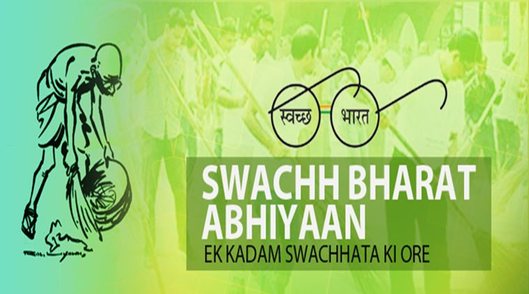
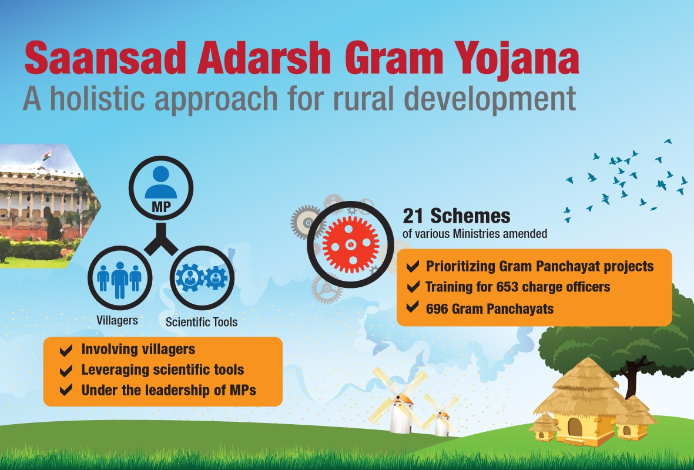
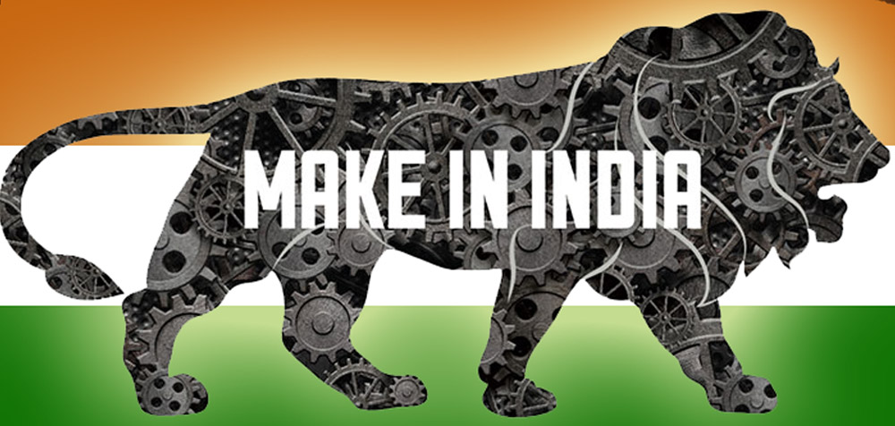
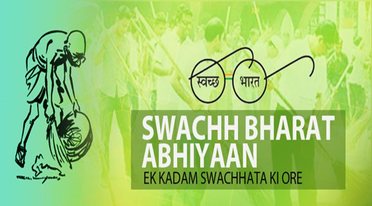
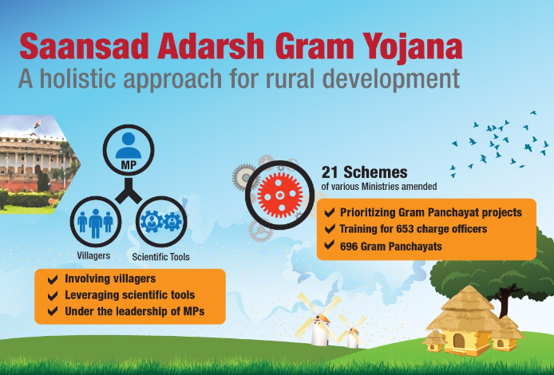
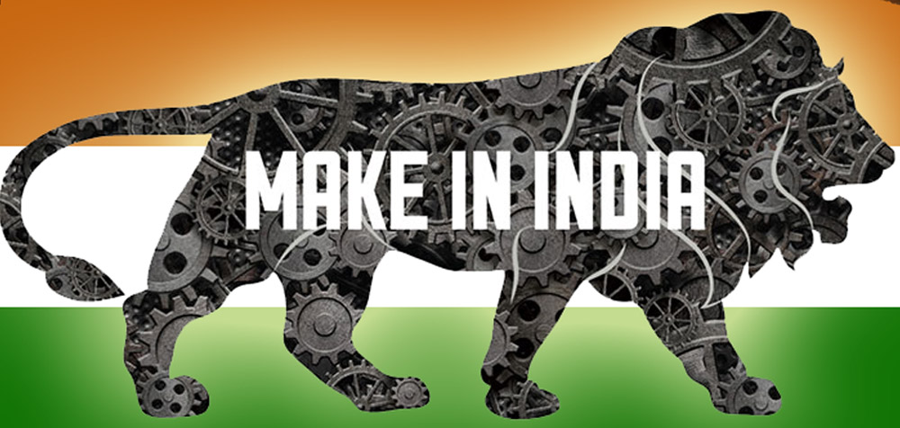

Indian Government, at all levels, announces Welfare Schemes for a cross section of the society from time to time. These schemes could be either Central, State specific or a joint collaboration between the Centre and the States. In this section, we have attempted to provide you an easy and single point access to information about several welfare schemes of the Government and their various aspects including eligible beneficiaries, types of benefits, scheme details etc.
The ministries of the Government of India have come up with various schemes from time to time. These schemes could be either Central, state specific or joint collaboration between the Centre and the states.
The Central Government lead by Shri Narendra Modi has become quite famous for launching a number of social welfare schemes throughout the country within a short span of time.

 




